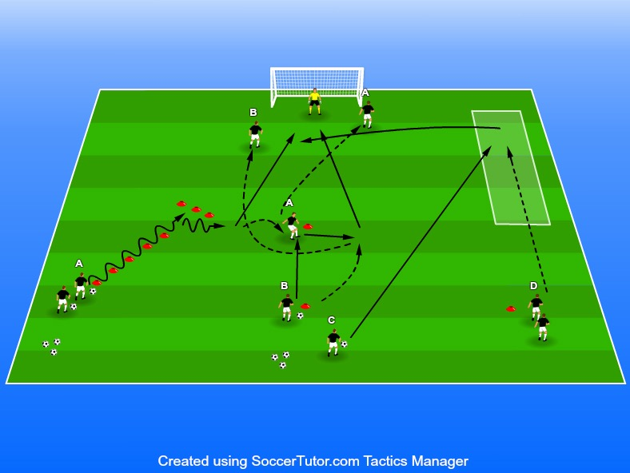

Avslut, drivteknik och inlägg
10-20 bollar
9-15 spelare
10-12 koner
Spelare A börjar att driva bollen i ett sick-sack mönster mellan konerna för att sen göra en riktningsförändring vid de 3 konerna som står framför. Efter riktningsförändring kommer ett avslut. Efter avslut tas en löpning direkt till nästa kon (se illustration) för att få en pass av spelare B. Spelare A väggpassar bollen snett utåt till spelare B som kommer för att gå på avslut. Samtidigt som skott tas, slås en boll av spelare C i ledet bakom spelare B ut i djupet till spelare D, som tar emot och slår ett inlägg. Spelare A och B har då tagit löpningar in i boxen för att gå på avslut på inlägget från spelare D. När de har tagit avslut från inlägget börjar en ny spelare från spelare As position.
Alla spelare återgår sedan till sina köer
Se till att spelarna springer mot olika ytor (främre stolpen, bakre stolpen eller snett bakåt
Kan sedermera introducera en försvarare i övningen så att det ska bli så matchlikt som möjligt
Använd flera olika drivsätt i konbanan
Börja med inlägg på marken för att få in tempo i övningen. Inlägg med höjd kan komma in i bilden när tränarna ser att spelarna behärskar övningen.